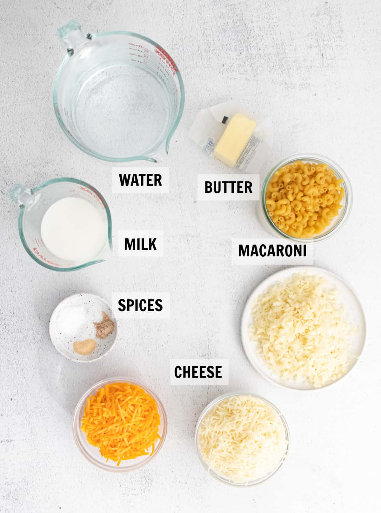
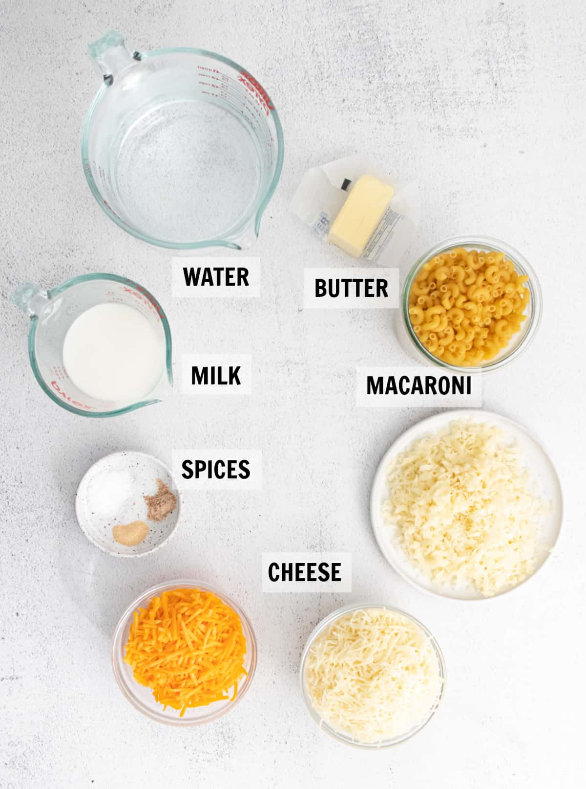

Classic Macaroni and Cheese
This creamy, comforting dish is a staple for quick family dinners, blending simple ingredients into a cheesy delight that's both nostalgic and satisfying.
Recipe Information
Preparation time: 10 minutes
Cooking time: 20 minutes
Number of servings: 4
Difficulty level: Beginner
Ingredients
- 8 ounces elbow macaroni
- 2 tablespoons butter
- 2 tablespoons all-purpose flour
- 2 cups milk
- 2 cups shredded sharp cheddar cheese
- 1/2 teaspoon salt
- 1/4 teaspoon black pepper
Instructions
- Bring a large pot of lightly salted water to a boil. Add the elbow macaroni and cook according to the package directions until al dente, about 8 minutes. Drain well and set aside.
- While the pasta cooks, melt the butter in a medium saucepan over medium heat.
- Whisk in the flour and continue stirring for 1-2 minutes to create a smooth roux without letting it brown.
- Gradually pour in the milk while whisking constantly to avoid lumps, and cook until the mixture thickens and bubbles, about 5 minutes.
- Remove from heat and stir in the shredded cheddar cheese until fully melted and the sauce is creamy. Season with salt and black pepper to taste.
- Add the drained macaroni to the cheese sauce and stir until evenly coated. Serve immediately for the best texture.
Tips
For extra creaminess, use whole milk instead of skim. If you want a baked version, transfer the mixture to a baking dish, top with buttered breadcrumbs, and broil for 2-3 minutes until golden.
Nutrition Facts
Per serving (approximate): Calories: 450, Total Fat: 20g, Saturated Fat: 12g, Carbohydrates: 45g, Protein: 20g, Sodium: 600mg.
 

Source: Inspired by AllRecipes